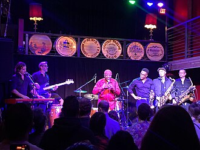

Ural Thomas
Ural Thomas is an American soul music singer. While Thomas has made music for over fifty years, his public performances span two eras: the 1950s through the 1960s, and from 2013 through the present as Ural Thomas and the Pain.
Complete Discography & Tracklists (2)